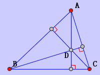

Circumcenter.
Click three non-collinear points to construct the circumcenter of the triangle.


Centroid.
Click three non-collinear points to construct the centroid of the triangle.

Orthocenter.
Click three non-collinear points to construct the orthocenter of the triangle.

Incenter.
Click three non-collinear points to construct the incenter of the triangle.

JGEX Help